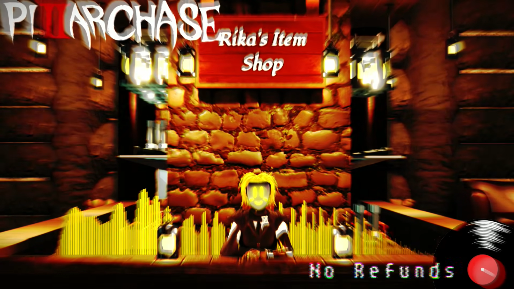
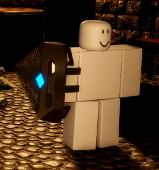
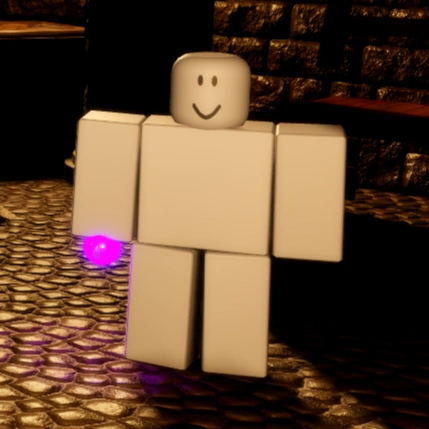

El rol de supervivientes es el más común y el primero con el que jugarás al iniciar en el juego. Como superviviente, tendrás que asegurarte de sobrevivir lo mejor posible las rondas y evadir a los monstruos con los que te toque sobrevivir.
Aunque no solo debes de tener en cuenta los objetos, sino que también tienes que cumplir con una serie de objetivos los cuales varían según el mapa; los objetivos no solo son importantes para reducir el tiempo y sobrevivir, sino que al hacerlos puedes ganar puntos de espera para ser monstruo y tener una ventaja a los demás jugadores.
Los supervivientes cuentan con 23 de velocidad de sprint, 100 de stamina y 4 espacios de inventario.

En el lobby, se encuentra ubicada la tienda de la Shookeper, la cual ofrece ítems muy útiles para los supervivientes a la hora de estar en una ronda. En la tienda encontraras ítems que ayudaran a iluminar el mapa como barras luminosas, linternas y faroles; ítems que te curan como el botiquín y un Health Booster y la Bloxy Cola que te dará un boost de estamina. Es muy recomendado saber que ítems comprar y cuales no, por tener un inventario limitado.
Los supervivientes cuentan con clases las cuales son muy útiles para maximizar tus chances de sobrevivir y ayudar a los demás supervivientes a ganar la partida. Estas clases proporcionan nuevas habilidades a los supervivientes a costo de estadísticas como la salud o estamina, o beneficiando a una que otra dependiendo de la clase equipada.
Aquí hay una lista de las clases que estarán disponibles en la actualización del recode:
| Clase | Descripción |
|---|---|
|
Frontliner
 |
Otorga un escudo al usuario el cual proporciona una habilidad para soportar
daño de forma reducida y una habilidad de golpeo a los monstruos, ganando un
aumento de velocidad.
- Reduce de 100 a 80 de vida. - Aumenta de 100 a 105 de estamina. - Precio de 315 monedas. |
|
Auxiliary
|
Otorga al usuario un Boombox Super Fly Dorado en la espalda. Esta clase no modifica los puntos de vida ni la resistencia. El boombox se puede usar para activarse y, mientras está activado, tiene dos modos: un aura curativa
y un aura de velocidad, ambos activables por separado.
- Recupera 1hp por segundo. - Stamina base de 100. - Precio de 315 monedas. |
|
Vanisher
 |
Otorga al usuario una poción púrpura en la cintura. Esta clase reduce los puntos de vida a 60 , pero aumenta la resistencia a 110. La poción se puede usar para volverse
invisible por un corto período o verterla sobre el usuario para curarse.
-Pocion de invisibilidad de 10 segundos. -Stamina aumentada de 100 a 110. -Recistencia reducida de 80 a 60. -Precio de 315 monedas. |